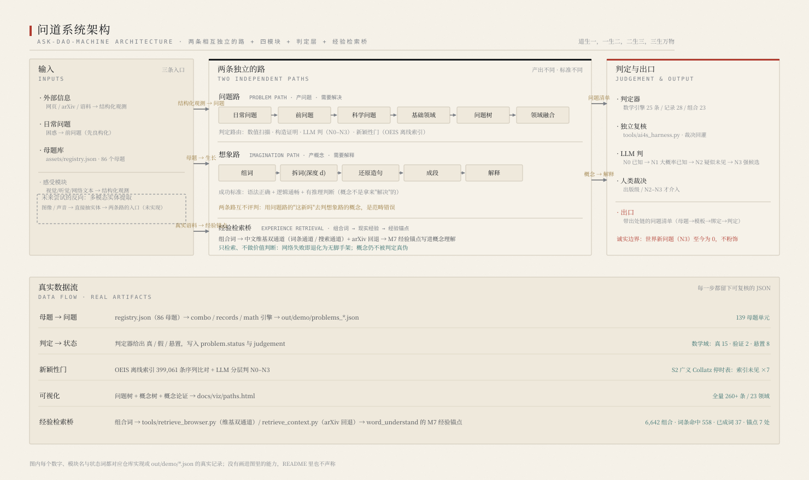
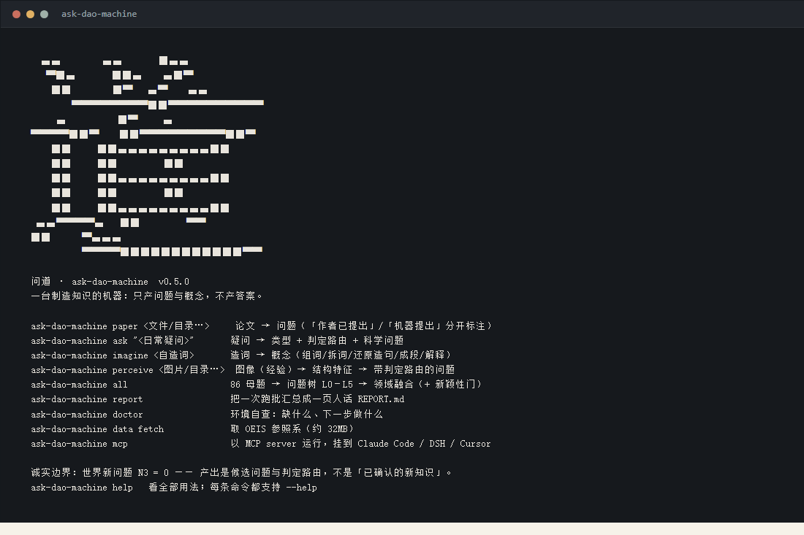
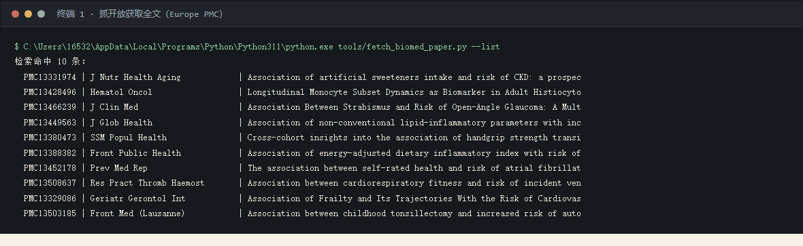
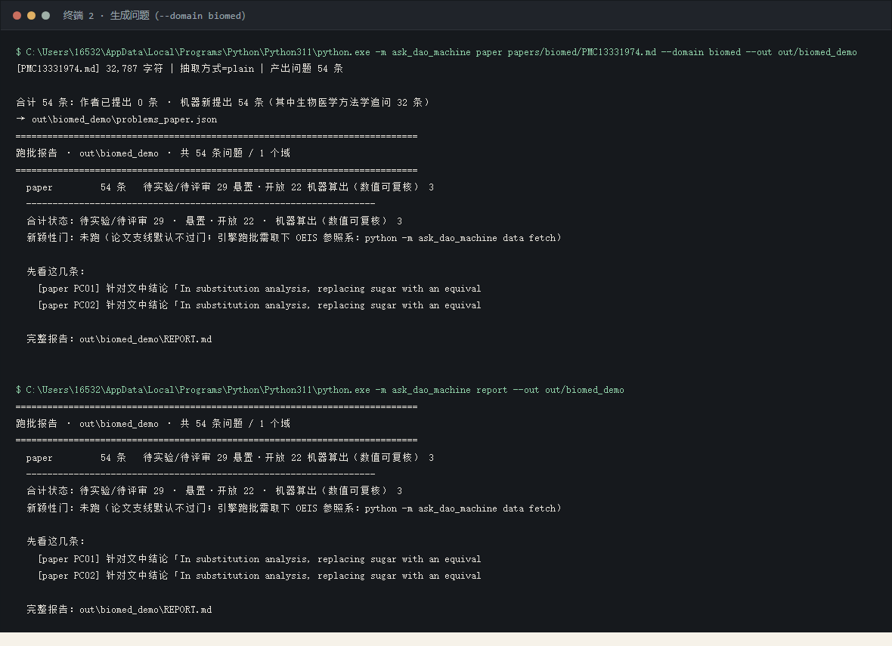
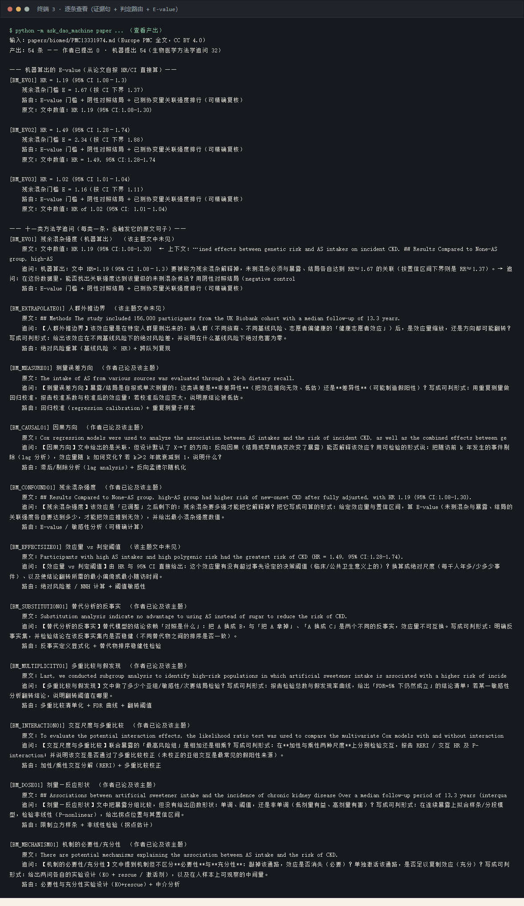
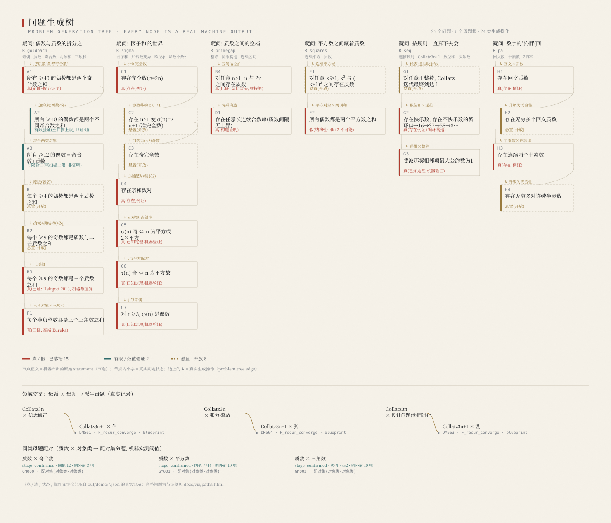

母题是能生成问题的基元；每个真伪问题向深处分支（L0–L5）； 不同的树在结构桥梁处交叉，生出新问题。下面就是把这条链跑出来的全部东西。
已有的 AI4S 生态擅长解决问题——给定问题，它能算出答案。 但"问题从哪来"这一环长期空缺：能定义问题、提出问题的系统，远比能解题的系统稀缺。 问道补的正是这一环，它认为知识产出于两条互相独立的路。
两条路互不评判：用问题路的逻辑（"这有真实所指吗""这新吗"）去评判想象路的概念，是范畴错误。
经验检索桥只提供脚手架，不做裁判：检索到的真实机制用来支撑理解，
不改变"概念不需要真实所指"这条纪律；检索失败时桥退化为无锚点，想象路照常走。
想象路的核心原则：每个词都有意义，只不过是我们缺少想象力，无法理解它——因此不存在空想，
任务不是判断"有没有意义"，而是想出一个自洽的理解。
我们反复重定义过"新"。最终确立三层问题发现模式与两种新知识产生方式。 早期只用"K3 且人类未知"当唯一及格线，于是把 K1/K2 的实际产出当成"不够格"——那是错的。
| 层 | 是什么 | 机器能做到 |
|---|---|---|
| K1 提出问题 | 把日常困惑 / 知识裂缝，改造成精确可判的问题 | ✅ |
| K2 推进解答 | 对旧问题给出更强证据 / 更大边界 | ✅ |
| K3 归纳理论 | 从数据归纳出可验证的普遍律 | ⚠ 部分 |
| 方式 | 说明 |
|---|---|
| ① 提出新问题 | 爱因斯坦的追光思想实验不是解答，是问题——但它改变了物理 |
| ② 旧问题的新解答 | 回文数+素数 从 10⁶ 推到 10⁸ 零例外——这是新知识 |
| 形态 | 含义 | 代价 |
|---|---|---|
| 陈述新 | 这个句子没出现过 | 廉价：换个说法就算新 |
| 对象新 | 这个结构没被研究过 | 可造：但查证后常被占领 |
| 接口新 | 问题站在刚被解锁的节点上 | 稀缺：科学史大问题的真实产地 |
真正的大问题不是"没人问过"，而是"问不出来"—— 它在某个节点之前，既没有问它的动机，也没有答它的工具。
四个模块支撑两条独立的路：一条把困惑变成可判的问题，一条把词变成被理解的概念。 每一步都必须机器实测，不许空转。
| 输入 | 入口（可跑的命令） | 产出 |
|---|---|---|
| 经验（图像） | ask-dao-machine perceive 图片/ | 结构特征（对称度/块熵/边界密度/占比）→ 带判定路由的视觉问题 |
| 日常问题 | run_paths.py problem --input daily --q "…" | 类型判定 + 判定路由 → 科学问题 |
| 已知未解 / 科学问题 | scihist_to_problems.py · problem_lineage.py | 正式问题 + 谱系（祖先/自身/后代/侧枝） |
| 母题 | ask-dao-machine <域>（86 个母题） | 问题树：母题 → 前问题 → 科学问题 → 基础领域 → 问题树 L0–L5 → 领域融合 |
| 造词 | run_paths.py imagine --word / --pairs | 概念（组词 → 拆词(d) → 还原造句 → 成段 → 解释） |
| 论文 / 语料 | ask-dao-machine paper 文件或目录 | 问题清单（「作者已提出」与「机器新提出」分开标注） |
| 产物 | 文件 | 说明 |
|---|---|---|
| 问题清单（主产物） | problems_*.json · discovery_manifest.json | 每条带对象 / 量词域 / 判据 / 判定路由 / 出处链 |
| 概念 / 理论草稿 | word_*.json · sentence_batch.json | 想象路产出；标准是「解释」，不是真伪 |
| 判定结果与证据推进 | harness_verdicts.json · novelty_report.json | confirmed / rejected / open；目前唯一称得上「新知识」的一类 |
| 报告与可视化 | REPORT.md · viz/paths.html | 一页人话汇总 + 问题树/概念树 |
视觉 / 听觉 / 网络文本 → 结构化观测，长出日常疑问。
未来尝试的反向：多模态实体提取（未实现）
反例驱动 · 问题树 L0–L5 · 全领域并行扫描 · 领域融合 · 新颖性门。
对问题清单独立验证、求解，裁决回灌。标准：答案成立 / 可判。
组词 → 拆词（深度 d）→ 还原造句 → 成段 → 解释。
产问题，需解决。出口：可判问题清单（带判定路由）。
产概念，需解释。两条路互相独立。
| 引擎 | 作用 | 纪律 |
|---|---|---|
| counterex_engine | 反例驱动：从例外集长出机器答不出的问题 | 只提机器结算不了的问题 |
| territory_engine | 问题树 L0–L5 分层 + 谱系门 | 每爬一层必须机器实测 |
| novelty_gate | 四道真门：机器真判 → OEIS 实查 → 结构可推性 → 显著性证书 | N3 路径已证明可达 |
| all_domains_engine | 14 领域 × 14 进程并行扫描 | 全领域覆盖 |
| field_fusion | 领域级融合（含结构桥梁判据） | 无共享结构的配对是空洞笛卡尔积 |

out/demo/*.json 的真实记录
（生成脚本 tools/arch_diagram.py）道生一，一生二，二生三，三生万物。它不是问答机，也不是单纯的问题制造机器 ——
是一台知识发现机器。装好之后只有一个命令 ask-dao-machine：敲它就报身份，
敲参数就干活；产出固定落在 --out 目录，可以直接接进管道与脚本。
# 装（Python 3.9+；核心零依赖） $ git clone https://github.com/shikunpneg/ask-dao-machine && cd ask-dao-machine $ pip install -e . # 用：无参数先报身份（徽标 + 命令速查），有参数就干活 $ ask-dao-machine $ ask-dao-machine paper papers/biomed/PMC13331974.md --domain biomed --out out/biomed_demo

ask-dao-machine 进去看到的东西 · 徽标是把系统字体里「道」的位图转成字符画
（反向校验逐点一致），着色只用朱砂，正文用终端默认前景色，浅底深底都看得见| 你要做的事 | 命令 | 得到什么 |
|---|---|---|
| 读一篇论文，找出作者没提的问题 | paper <文件/目录…> [--domain biomed] | 问题清单 + REPORT.md；「作者已提出」与「机器提出」分开标注 |
| 把一句日常疑问变成可判问题 | ask "<疑问>" | 类型判定 + 判定路由 route + 形式化后的科学问题 |
| 造一个词，逼它自洽 | imagine <自造词> [--depth 3] | 概念链：组词 → 拆词 → 还原造句 → 成段 → 解释 |
| 从图像（经验）里长出问题 | perceive <图片/目录…> | 结构特征（对称度/块熵/边界密度…）+ 带路由的问题 |
| 全领域跑一批问题树 | all | 86 母题 → 问题树 L0–L5 → 领域融合 → 新颖性门 |
| 只跑一个领域 | math | records | combo | counterex | … | 该域问题 JSON（可选 --limits '{"N":100000}'） |
| 把一堆产出汇总成一页人话 | report [--out DIR] | <out>/REPORT.md：不用自己翻十个 JSON |
| 确认这台机器能不能跑 | doctor | Python / 依赖 / 引擎 / 参照系 / 输出目录 / 测试，全绿即可用 |
| 取参照系（新颖性门要用） | data fetch | data/stripped.gz（约 32MB，来自 OEIS） |
| 挂到 Agent 宿主里当工具用 | mcp | MCP server（stdio）：Claude Code / DSH / Cursor 可挂载 |
| 看全部用法 / 版本 | help · --version | 徽标 + 速查；每条子命令都支持 --help |
| 约定 | 说明 |
|---|---|
| 产出固定 | 全部落在 --out 目录：problems_*.json（机器可读、每条带
route）+ REPORT.md（一页人话）；同一个 --out 能继续接
report |
| 管道友好 | 子命令不打印徽标、不上色，可直接
ask-dao-machine paper papers/ --out out/p | tail -3 |
| 退出码有意义 | 0 完成 · 2 参数/路径/格式问题（细节在 stderr）·
1 其它失败 |
| 宿主 | 挂法 | 状态 |
|---|---|---|
| 任何 shell（Claude Code / Codex / CI） | ask-dao-machine paper … | ✅ CLI 实测 |
| Claude Code · Cursor · Continue | .mcp.json（tools/install_integrations.py） | ✅ 配置已生成 |
| DSH | .dsh/skills/ask-dao-machine/SKILL.md | ✅ 本机热加载通过 |
| DSH（MCP 插件行） | cordis.yml: dsh-mcp-client + command/args | ⬜ 片段已给全，未在本机挂 |
| GitHub | 论文进 papers/ 推送 → Action 评论回问题 | ✅ 已跑通 |
完整说明（含徽标怎么来的）：命令行 · 真实使用回放（论文 → 问题 → 报告）：生物医学完整演示 · 装进 Claude Code / DSH / Cursor：系统结构 里的宿主矩阵。
一次真实运行的完整回放：输入一篇开放获取（CC BY 4.0）的临床研究全文 （PMC13331974， J Nutr Health Aging；UK Biobank 前瞻队列 n=156,000，中位随访 13.3 年，调整后 HR 1.19）， 输出新知识与新问题。命令可照抄，输出未做删改。

tools/fetch_biomed_paper.py，只走公开接口）
ask-dao-machine paper papers/biomed/PMC13331974.md
--domain biomed --out out/biomed_demo → 54 条，其中生物医学方法学追问 32 条从论文自报的 HR/OR/RR (95% CI) 直接算出残余混杂门槛（E-value）：
要把这个效应解释成"没有效应"，未测混杂必须与暴露、结局同时达到多强的关联。
| 论文报告 | E-value | 按 CI 下界 | 含义 |
|---|---|---|---|
| HR 1.19 (95% CI 1.08–1.3) | 1.67 | 1.37 | 未测混杂要与暴露、结局各自达到 RR≈1.67，才能把该效应解释为零 |
| HR 1.49 (95% CI 1.28–1.74) | 2.34 | 1.88 | 最高风险组所需的混杂强度更高，最难被混杂解释 |
| HR 1.02 (95% CI 1.01–1.04) | 1.16 | 1.11 | 替代分析那一条最脆：几乎任何微弱混杂都能解释掉 |
公式 E = RR + √(RR(RR−1))，用 HR 近似 RR，只在结局不常见时成立（本文 CKD 发病率低）。
E-value 是门槛，不是"存在这样的混杂"的证据；原文里从未出现 E-value——
这一条是机器加上去的。
论文的方法学缺口被写成"可判问题"：每条都指回原文句子，并给出判定方式（route）。
10 类缺口共 29 条：其中 23 条的主题作者已在文中论及（机器只贡献形式化），
6 条的主题文中未见；另有 3 条是机器算出的 E-value（见上表）。
| 缺口 | 触发它的原文句子 | 机器追问（可判形式） | 判定路由 | 作者 |
|---|---|---|---|---|
| 因果方向 | Cox regression models were used to analyze the association between AS intakes and the risk of incident CKD, as well as | 文中给出的是关联，但设计默认了 X→Y 的方向：反向因果（结局或早期病变改变了暴露）能否解释该效应？用可检验的形式说：把随访前 k 年发生的事件剔除（lag 分析），效应量随 k 如何变化？若 k≥2 年就衰减到 1，说明什么？… | 滞后/剔除分析（lag analysis）+ 反向孟德尔随机化 | 作者已论及 |
| 残余混杂强度 | ## Results Compared to None-AS group, high-AS group had higher risk of new-onset CKD after fully adjusted, with HR 1.1 | 该效应是「已调整」之后剩下的：残余混杂要多强才能把它解释掉？把它写成可算的形式：给定效应量与置信区间，算 E-value（未测混杂与暴露、结局的关联强度各自要达到多少，才能把效应推到无效），并给出最小混杂强度数值。… | E-value / 敏感性分析（可精确计算） | 作者已论及 |
| 剂量—反应形状 | ## Associations between artificial sweetener intake and the incidence of chronic kidney disease Over a median follow-u | 文中把暴露分组比较，但没有给出函数形状：单调、阈值，还是非单调（低剂量有益、高剂量有害）？写成可判形式：在连续暴露上拟合样条/分段模型，检验非线性（P-nonlinear），给出拐点位置与其置信区间。… | 限制立方样条 + 非线性检验（拐点估计） | 作者已论及 |
| 效应量 vs 判定阈值 | Participants with high AS intakes and high polygenic risk had the greatest risk of CKD (HR = 1.49, 95% CI:1.28−1.74). | 由 HR 与 95% CI 直接给出：这个效应量有没有超过事先设定的决策阈值（临床/公共卫生意义上的）？换算成绝对尺度（每千人年多/少多少事件）、以及使结论翻转所需的最小偏倚或最小随访时间。… | 绝对风险差 / NNH 计算 + 阈值敏感性 | 文中未见 |
| 人群外推边界 | ## Methods The study included 156,000 participants from the UK Biobank cohort with a median follow-up of 13.3 years. | 该效应量是在特定人群里测出来的：换人群（不同族裔、不同基线风险、志愿者偏健康的「健康志愿者效应」）后，是效应量缩放，还是方向都可能翻转？写成可判形式：给出该效应在不同基线风险下的绝对风险差，并说明在什么基线风险下绝对危害为零。… | 绝对风险重算（基线风险 × HR）+ 跨队列复现 | 文中未见 |
| 交互尺度与多重比较 | To evaluate the potential interaction effects, the likelihood ratio test was used to compare the multivariate Cox mode | 联合暴露的「最高风险组」是相加还是相乘？写成可判形式：在加性与乘性两种尺度上分别检验交互，报告 RERI / 交互 HR 及 P-interaction；并说明该交互是否通过了多重比较校正（未校正的亚组交互是最常见的假阳性来源）。… | 加性/乘性交互分解（RERI）+ 多重比较校正 | 作者已论及 |
| 测量误差方向 | The intake of AS from various sources was evaluated through a 24-h dietary recall. | 暴露/结局是自报或单次测量的：这类误差是非差异性（把效应推向无效、低估）还是差异性（可能制造假阳性）？写成可判形式：用重复测量做回归校准，报告校准系数与校准后的效应量；若校准后效应变大，说明原结论被低估。… | 回归校准（regression calibration）+ 重复测量子样本 | 作者已论及 |
| 机制的必要性/充分性 | There are potential mechanisms explaining the association between AS intake and the risk of CKD. | 文中提到机制但不区分必要性与充分性：敲掉该通路，效应是否消失（必要）？单独激活该通路，是否足以复制效应（充分）？写成可判形式：给出两问各自的实验设计（KO + rescue / 激活剂），以及在人样本上可观察的中间量。… | 必要性与充分性实验设计（KO+rescue）+ 中介分析 | 作者已论及 |
| 多重比较与假发现 | Last, we conducted subgroup analysis to identify high-risk populations in which artificial sweetener intake is associa | 文中做了多少个亚组/敏感性/次要结局检验？写成可判形式：报告检验总数与假发现率曲线，给出「FDR=5% 下仍然成立」的结论清单；若某一敏感性分析翻转结论，说明翻转阈值在哪里。… | 多重比较清单化 + FDR 曲线 + 翻转阈值 | 作者已论及 |
| 替代分析的反事实 | Substitution analysis indicate no advantage to using AS instead of sugar to reduce the risk of CKD. | 替代模型的结论依赖「对照是什么」：把 A 换成 B，与「把 A 拿掉」、「A 换成 C」是两个不同的反事实，效应量不可互换。写成可判形式：明确反事实集，并检验结论在该反事实集内是否稳健（不同替代物之间的排序是否一致）。… | 反事实定义显式化 + 替代物排序稳健性检验 | 作者已论及 |

这个示例不证明什么：世界新问题（N3）至今 = 0，这里产出的是候选问题与证据边界推进； "文中未见"只表示这份全文里没有，不代表文献里没有；HR 与 E-value 的换算不构成任何临床建议。 逐条说明见 生物医学完整演示； 本节的幻灯片版本：《问道知识发现系统在生物医学领域的发现》（PPTX · PDF）。
母题通过组合模板生长为问题树，树与树在结构桥梁处交叉融合 → 新问题。 问题路分五步：母题 → 前问题 → 科学问题 → 基础领域 → 问题树 → 领域融合，每一步都必须机器实测。
| 图上的东西 | 来自数据里的哪一项 |
|---|---|
| 节点正文 | problem.statement |
| 节点颜色 | problem.status（真 / 假 / 有限验证 / 悬置） |
| 边上的字 | problem.tree.edge（真实生成操作） |
| 多层分支 | problem.tree.parent（二级生长，如 C1 → C2） |
| 跨域 inset | derived_motifs.parents / grown_motifs.probe |

tools/make_problem_tree.py，
数据 out/demo/problems_math.json + derived_motifs.json + grown_motifs.json下面每一张表都是可复核的数字。负结果与自纠错一并列出——这台机器最大的产出是验证边界， 而不是漂亮话。
| base | 例外数 | 最后例外 | 状态 |
|---|---|---|---|
| 4 | 5 | 4345 | confirmed |
| 5 | 4 | 1266 | confirmed |
| 6 | 1 | 1855 | confirmed |
| 7 / 8 / 10 / 12 / 15 | 0 | — | confirmed |
| 9 / 11 / 13 / 14 / 16 | 1 | 124 / 126 / 126 / 540 / 539 | confirmed |
| 2 | 持续增长 | 贴边界 | rejected |
base 10 已推到 10⁸ 零例外，两种独立实现交叉验证； 人类讨论此前止于 ~10⁶（MO #250504 曾怀疑 999999 是反例）。
| 来源 | 数量 |
|---|---|
| 跨进制规律 | 15 |
| 反例驱动（机器答不出的） | 11 |
| 跨域组合 | 7 |
| 科学史未解 | 32 |
| 网页 / arXiv | ~30 |
科学史挖出的真未解：奇完全数 · 曲线与直线比较 · 欧拉-哥德巴赫 …
| 项目 | 机器 | 已知 |
|---|---|---|
| Tn / TnI 集合类 | 224 | Forte 224 ✓ |
| 最大熵集合类 | 恰 2 个 | all-interval tetrachords ✓ |
| 多完全数 k = 2,3,4 | {6,28,496,8128} / {120,672,523776} / {30240,32760} | OEIS A007539 ✓ |
| 概念 | 核心判断 |
|---|---|
| 记忆调性 | 失忆 = 调性崩溃；记忆调性保证精力分配 |
| 认知压缩 | 理解与失真是同一硬币两面；直觉 = 解压最快路径 |
| 责任催化 | 问责 = 最强催化剂；责任爆炸的临界点 |
| 资本反馈 | 反馈强度决定财富分布形态 |
| 项 | 数字 | 说明 |
|---|---|---|
| 组合词总数 | 6,642 | 词库 82 词两两组合（word_fusion.json） |
| 词条通道命中 | 558 8.4% | a 或 b 的维基词条里提到了对方——现实中两词确实有联系的那些组合 |
| 搜索通道：已成词 | 37 0.6% | 组合词本身在中文维基已有独立条目（其余是"可以新建这个页面"） |
| 维基搜索命中（中位 / 最大） | 381 / 48,287 | ≥1000 条的有 2,023 个（现实里被大量讨论）；0 条的 0 个 |
| 语料规模 | 49 词条 | data/wiki/（词库 82 词中已抓 49），平均 9.1 段/词 |
| 经验锚点已写入 | 7 处 | 写进概念理解的 M7 锚点（维基·公理系统 / 熵 ×2 / 意识 / 记忆 / 责任 / 正义）； 当前只对 9 个重点组合检索，RETRIEVE_ALL=1 可全量 |
桥的纪律：只检索，不做价值判断。 它给概念一个可核对的现实接口（"现实中这两件事有没有被放在一起说过"）， 但不判定概念真伪——可判性留给问题路。数字来自跑批产物 out/demo/browser_mass_search.json（16.9 MB，跑批产物不入库，可重跑复现）。
完整结果、负结果与 12 次自纠错见 结果与证据手册 · 可视化页 paths.html（问题树 + 概念树 + 概念论证）
按项目自己的分级展示：K1 提出的问题（新问题）、K2 证据边界推进（目前唯一称得上新知识的一类）、 K3 归纳的规律、想象路概念、跨域观点、复核性结果与负结果。 每条正文都是机器产出的原始陈述（仅做展示清洗，措辞经 LLM 审校），状态与判定路由直接来自记录； 左上角**来源徽章**区分「机器提出（参照系未见）」与「已知问题 · 机器重新表述」，不把已知猜想包装成机器发现。 N3（世界新问题）至今为 0，不许粉饰。
全部 260+ 条问题、跨进制完整例外表、张力全量（129→387→258→19）、三域仿真表、12 次自纠错 —— 见 结果与证据（完整版手册） · 可视化页
除两条路之外还有模型这条线。下列入口直达 ModelScope 运行页面， 覆盖推理运行与训练微调两条路径。
从架构到命令，从"什么算新知识"到"诚实边界"。全部九篇。
这一节比上面任何一张表都重要。以下六条写在这里，是为了让这台机器不能靠话术变强。